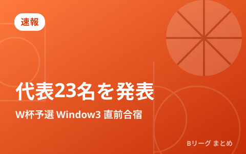

男子日本代表、W杯予選Window3へ第2次強化合宿の23名を発表 7月に中国・韓国とアウェー2連戦

日本バスケットボール協会（JBA）は、FIBAバスケットボールワールドカップ2027アジア地区予選のWindow3に向けた「第2次強化合宿」の招集メンバー23名を発表しました。合宿は東京・味の素ナショナルトレーニングセンターで実施。日本は7月3日に中国（瀋陽）、7月6日に韓国（高陽）と、いずれもアウェーで戦います。
7月のアウェー2連戦
Window3は短期間で2試合を戦う“連戦”です。今回はいずれも敵地での試合となり、移動やコンディション調整も含めてタフな日程となります。グループ内のライバルとの直接対決が含まれるため、予選突破レースを占う重要なウィンドウになります。
| 日付 | 対戦 | 会場 |
|---|---|---|
| 2026年7月3日 | 中国 vs 日本 | 瀋陽（中国・アウェー） |
| 2026年7月6日 | 韓国 vs 日本 | 高陽（韓国・アウェー） |
注目の招集メンバー
合宿には、ベテランから若手、海外でプレーする選手まで幅広く招集されました。経験豊富な比江島慎や、ディフェンスの要ジョシュ・ホーキンソン、得点源として期待される富永啓生、海外組の渡邊雄太や河村勇輝らが名を連ねています。大学やアメリカでプレーする若手も複数選ばれ、世代交代と競争の両面が意識された顔ぶれです。
| ポジション | 主な招集選手（一部） |
|---|---|
| ガード | 河村勇輝、安藤誓哉、齋藤拓実、テーブス海、佐々木隆成 ほか |
| ウイング | 比江島慎、渡邊雄太、馬場雄大、富永啓生、西田優大 ほか |
| ビッグマン | ジョシュ・ホーキンソン、川真田紘也、狩野富成 ほか |
このウィンドウの見どころ
アウェーでの連戦は、本大会さながらの厳しさを経験できる貴重な機会です。誰が司令塔を務め、どんな組み合わせで戦うのか。若手がどこまで通用するのか。そして、グループ上位を争う相手から勝ち点を持ち帰れるかが最大の焦点になります。8月には国内でも国際試合が予定されており、夏は代表強化が一気に進みます。8月の試合はこちらの記事をご覧ください。
Q. Window（ウィンドウ）って何？
A. FIBAの予選で、決められた期間に集中して代表戦を行う“まとまり”のことです。クラブの試合の合間に各国の代表が招集され、ホーム＆アウェーで戦います。
出典：公益財団法人日本バスケットボール協会「2026年度 男子日本代表チーム 第2次強化合宿 招集メンバー発表」
https://www.japanbasketball.jp/japan/86849